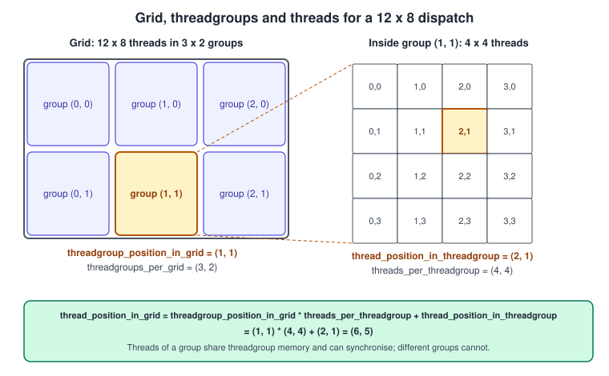
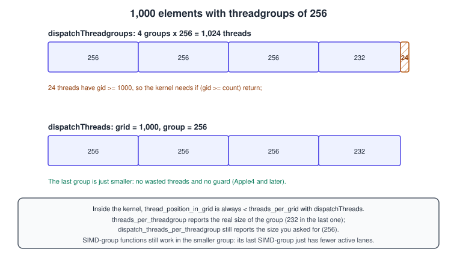
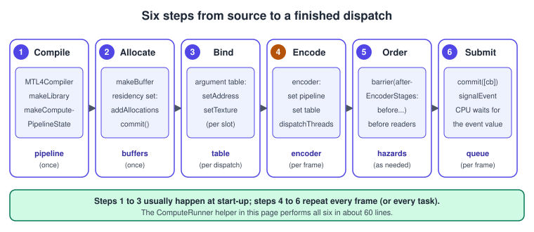
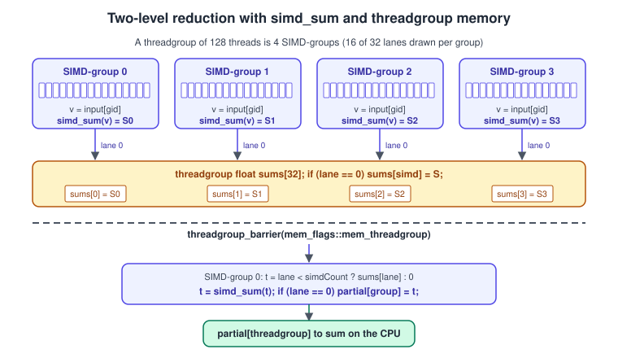

Compute Kernels
|
This content was generated with the assistance of AI and should be verified against the official documentation before being relied on in production. |
A compute kernel is a function that the GPU runs many thousands of times at once, with no triangles, no rasteriser and no framebuffer. The same hardware that shades pixels does arithmetic on buffers and textures: moving particles, culling objects, filtering images, building histograms, evaluating small neural networks. Compute is the part of Metal that looks most like general GPU programming, and the rest of this section leans on it: particles (Particles), post-processing (Image Processing and Metal Performance Shaders), GPU culling (GPU-Driven Rendering and Indirect Command Buffers), tessellation factors and machine learning.
The facts were checked in November 2026. The page documents Metal 4 (the MTL4 types from the 26 OSes) and Metal Shading Language (MSL) 4.x, with the Metal 3
equivalent next to every Metal 4 listing, because a lot of existing code uses it. Compute runs on every Metal GPU; the SIMD-group reduction functions used here need
the Apple7 family (A14, M1) or later, which every Metal 4 device is; non-uniform threadgroups need Apple4 (A11) or later. The examples are command-line Swift programs that
compile MSL from a source string at run time, so they need no Xcode project: build them with swiftc on macOS 26 or later. Inside the Metal Bookshelf the kernels of this page
are the building blocks of the dust particles (stage 8 of the running example), and the grayscale and reduction kernels are small versions of what exposure control and
post-processing need. How a compute pass is ordered against render passes is in
Synchronization and Barriers. The OpenGL version of this topic is
Compute Shaders; the general GPU model is in GPU Architecture Basics.
The execution model: grid, threadgroups, threads

A dispatch launches a grid of threads in one, two or three dimensions. Metal divides the grid into threadgroups; every threadgroup has the same number of threads (except
possibly the last ones along an edge, see the dispatch section). Threads in one threadgroup run on the same GPU core, can share threadgroup memory and can wait for
one another at a threadgroup_barrier. Threads in different threadgroups cannot synchronise inside a dispatch and may run in any order, on any core, at any time.
Inside a threadgroup the hardware groups threads into SIMD-groups (called warps or wavefronts elsewhere): threads that execute the same instruction at the same time on adjacent
lanes. A SIMD-group is 32 threads on current Apple GPUs; the compute pipeline state reports it as threadExecutionWidth, and MSL as threads_per_simdgroup. Threads of a SIMD-group
can exchange data directly through registers, without memory, using the SIMD-group functions below.
The position of a thread is described by built-in attributes of the kernel arguments. With \( g \) the position in the grid, \( t_g \) the position of its threadgroup, \( S \) the threadgroup size and \( t_l \) the position inside the threadgroup:
\[ g = t_g \cdot S + t_l \]
| Attribute | Meaning | Type |
|---|---|---|
|
\( g \): global index, the usual way to pick the element to process |
|
|
size of the grid; must have the same type as |
as above |
|
\( t_g \): index of the threadgroup |
|
|
number of threadgroups |
as above |
|
\( t_l \): position inside the group |
|
|
linear index, 0 up to the group size minus 1 |
|
|
actual size of this group (smaller than requested at grid edges with |
as above |
|
the size you asked for at dispatch |
as above |
|
lane number (0 to 31) and SIMD-group size |
|
|
which SIMD-group, and how many |
|
The types of related attributes must agree (the specification lists the rules): the position and size in the grid have the same type, the position and size in the threadgroup have the same type,
and the SIMD-group attributes are ushort or uint. A mismatch is a compile error, not a runtime surprise. Inside a threadgroup, SIMD-groups of a standard compute function are linear and one-dimensional,
and the number of SIMD-groups is the thread count divided by the SIMD-group size, rounded up.
Limits
| Limit | Value | Where |
|---|---|---|
Threads per threadgroup |
1,024 on Apple4 and later, 512 on Apple2 and Apple3 (theoretical); the real limit of a kernel is |
Feature Set Tables |
Threadgroup memory |
32 KB on Apple4 and later (16 KB on Apple3, 16,352 bytes on Apple2); the length must be a multiple of 16 bytes |
Feature Set Tables |
SIMD-group width |
|
|
Buffers per kernel |
31 entries in the buffer table (the same number of bindings as an |
Feature Set Tables |
Textures per kernel |
96 on Apple4 and Apple5, 128 on Apple6 and later |
Feature Set Tables |
Inline data with |
4 KB (Metal 3 only; Metal 4 has no |
Feature Set Tables |
Check the actual maximum of each pipeline: two pipelines on the same device can differ because register use limits occupancy. maxTotalThreadsPerThreadgroup does not change after a pipeline is created.
Writing kernels in MSL
A kernel is a function with the kernel qualifier that returns void. Its arguments are the data it reads and writes plus built-in attributes. Pointers and references carry an address space (see
The Metal Shading Language):
| Address space | Meaning | Typical use |
|---|---|---|
|
read-write memory visible to every thread |
large buffers: particles, results |
|
read-only, cached, shared by the dispatch |
small uniform data, tables |
|
fast memory shared by the threads of one group; undefined at the start of the group |
tiles of data, partial sums, scratch |
|
private to one thread; registers and spill |
local variables |
Textures are arguments with an access qualifier: texture2d<float, access::read>, access::write, access::sample, or access::read_write where the pixel format supports it. A kernel reads with
read(uint2), writes with write(value, uint2) and cannot sample with filtering unless the texture is declared access::sample and a sampler is supplied. The Bookshelf kernels are small:
#include <metal_stdlib>
using namespace metal;
// y[i] = a * x[i] + y[i]; one thread per element.
kernel void saxpy(device const float *x [[buffer(0)]],
device float *y [[buffer(1)]],
constant float &a [[buffer(2)]],
uint i [[thread_position_in_grid]])
{
y[i] = a * x[i] + y[i];
}
// Convert a texture to grey, one thread per pixel.
kernel void grayscale(texture2d<float, access::read> src [[texture(0)]],
texture2d<float, access::write> dst [[texture(1)]],
uint2 gid [[thread_position_in_grid]])
{
float4 c = src.read(gid);
float y = dot(c.rgb, float3(0.2126, 0.7152, 0.0722));
dst.write(float4(y, y, y, c.a), gid);
}Source: Performing calculations on a GPU
Two attributes shape how a kernel is compiled. [[kernel, max_total_threads_per_threadgroup(256)]] before the function promises the compiler that the kernel is never launched with more than 256 threads per group,
which lets it use more registers per thread; the pipeline then reports a maxTotalThreadsPerThreadgroup of at most 256. [[host_name("name")]] gives a function a different name for the Swift side, useful with templated kernels.
Function constants (see The Render Pipeline for how they specialise a function) work for kernels as well.
Dispatch: dispatchThreads and dispatchThreadgroups

Metal gives two ways to launch the same kernel, on both MTL4ComputeCommandEncoder and the Metal 3 MTLComputeCommandEncoder:
| Call | You give | Behaviour |
|---|---|---|
|
the exact number of threads |
Metal makes as many full groups as fit and one smaller group per edge; no thread exists outside the grid (Apple4 and later) |
|
the number of groups |
every group is full; you round up, and threads past the data must return early |
Prefer dispatchThreads: the kernel is simpler and no thread is wasted. Use dispatchThreadgroups when the algorithm needs exactly one group per piece of work, as the reduction below does, or on hardware
without non-uniform groups. With dispatchThreadgroups the kernel must protect itself:
if (gid >= count) { return; } // one dimension
if (gid.x >= texture.get_width() || gid.y >= texture.get_height()) { return; } // two dimensionsSource: Performing calculations on a GPU
Do not return early before a threadgroup_barrier that the other threads of the group will reach; guard the memory access instead, as reduce_sum below does.
Both calls have indirect variants that read the dispatch size from a buffer the GPU wrote, such as the result of a culling pass: dispatchThreads(indirectBuffer:) and
dispatchThreadgroups(indirectBuffer:threadsPerThreadgroup:) on the Metal 4 encoder (the argument is a GPU address). That is the compute half of GPU-driven rendering.
Choosing a threadgroup size
The simplest rule from Apple’s article: use the SIMD width as the first dimension and the maximum threads per group divided by it as the second.
let width = pipeline.threadExecutionWidth // 32
let height = pipeline.maxTotalThreadsPerThreadgroup / width // 32 when the maximum is 1,024
let group = MTLSize(width: width, height: height, depth: 1) // 1,024 threads for a 2D imageFor one-dimensional work use a multiple of the SIMD width (256 is common). A group size that is not a multiple of the SIMD width leaves lanes idle in the last SIMD-group;
MTL4ComputePipelineDescriptor.threadGroupSizeIsMultipleOfThreadExecutionWidth (and the same property of the Metal 3 descriptor) lets the compiler assume it. Bigger groups are not always better: they
need all their threads to finish before the group’s memory is released, and a kernel with high register use may only fit 256 threads per group. For 2D image work, square-ish groups keep neighbouring pixels
(and cache lines) in one group. Measure with the GPU counters in Xcode rather than guessing.
Encoding a compute pass, step by step

-
Compile. Create an
MTL4Compileronce, compile a library from source or load the default one, and make anMTLComputePipelineStatefrom anMTL4ComputePipelineDescriptor. -
Allocate. Create buffers and textures; put them in an
MTLResidencySetattached to the queue, because Metal 4 does not make resources resident for you. -
Bind. Fill an
MTL4ArgumentTablewith GPU addresses (setAddress(_:index:)) and texture resource IDs (setTexture(_:index:)). Slot numbers match the[[buffer(n)]]and[[texture(n)]]indices. -
Encode. In an
MTL4ComputeCommandEncoderset the pipeline and the table, then dispatch. One encoder can issue many dispatches, and since it runs them concurrently, any dispatch that reads what a previous one wrote needs a barrier. -
Order.
barrier(afterEncoderStages: .dispatch, beforeEncoderStages: .dispatch, visibilityOptions: .device)between dependent dispatches, or a queue barrier before a later pass. Details in Synchronization and Barriers. -
Submit.
queue.commit([commandBuffer], options: nil), then signal an event; a CPU that needs the result waits on a shared event.
The helper below performs all six steps for one-off dispatches (this is a test harness style, it blocks until the GPU finishes). Put it in a file with the examples that follow and build both with
swiftc -O ComputeRunner.swift main.swift -o compute.
import Metal
/// A tiny Metal 4 helper that compiles MSL source and runs one compute dispatch at a time.
final class ComputeRunner {
let device: any MTLDevice
let queue: any MTL4CommandQueue
let compiler: any MTL4Compiler
let allocator: any MTL4CommandAllocator
let commandBuffer: any MTL4CommandBuffer
let table: any MTL4ArgumentTable
let residencySet: any MTLResidencySet
let library: any MTLLibrary
let finished: any MTLSharedEvent
private var finishedValue: UInt64 = 0
init(source: String) throws {
guard let device = MTLCreateSystemDefaultDevice(), device.supportsFamily(.metal4) else {
throw NSError(domain: "ComputeRunner", code: 1,
userInfo: [NSLocalizedDescriptionKey: "Metal 4 GPU required"])
}
self.device = device
queue = device.makeMTL4CommandQueue()!
compiler = try device.makeCompiler(descriptor: MTL4CompilerDescriptor())
allocator = device.makeCommandAllocator()!
commandBuffer = device.makeCommandBuffer()!
finished = device.makeSharedEvent()!
let libraryDescriptor = MTL4LibraryDescriptor()
libraryDescriptor.source = source
library = try compiler.makeLibrary(descriptor: libraryDescriptor)
let tableDescriptor = MTL4ArgumentTableDescriptor()
tableDescriptor.maxBufferBindCount = 8
tableDescriptor.maxTextureBindCount = 4
table = try device.makeArgumentTable(descriptor: tableDescriptor)
let setDescriptor = MTLResidencySetDescriptor()
setDescriptor.initialCapacity = 16
residencySet = try device.makeResidencySet(descriptor: setDescriptor)
queue.addResidencySet(residencySet)
}
func makePipeline(_ name: String) throws -> any MTLComputePipelineState {
let function = MTL4LibraryFunctionDescriptor()
function.library = library
function.name = name
let descriptor = MTL4ComputePipelineDescriptor()
descriptor.computeFunctionDescriptor = function
return try compiler.makeComputePipelineState(descriptor: descriptor,
dynamicLinkingDescriptor: nil,
compilerTaskOptions: nil)
}
func makeBuffer(length: Int) -> any MTLBuffer {
let buffer = device.makeBuffer(length: length, options: .storageModeShared)!
residencySet.addAllocation(buffer)
residencySet.commit()
return buffer
}
func makeTexture(_ descriptor: MTLTextureDescriptor) -> any MTLTexture {
let texture = device.makeTexture(descriptor: descriptor)!
residencySet.addAllocation(texture)
residencySet.commit()
return texture
}
/// Dispatches `pipeline` and blocks until the GPU has finished.
/// Buffers are bound to slots 0, 1, 2 ... and textures to slots 0, 1 ...
func run(_ pipeline: any MTLComputePipelineState,
buffers: [any MTLBuffer] = [], textures: [any MTLTexture] = [],
grid: MTLSize? = nil, threadgroups: MTLSize? = nil, group: MTLSize) {
for (slot, buffer) in buffers.enumerated() { table.setAddress(buffer.gpuAddress, index: slot) }
for (slot, texture) in textures.enumerated() { table.setTexture(texture.gpuResourceID, index: slot) }
allocator.reset() // safe: the previous work has finished
commandBuffer.beginCommandBuffer(allocator: allocator)
let encoder = commandBuffer.makeComputeCommandEncoder()!
encoder.setComputePipelineState(pipeline)
encoder.setArgumentTable(table)
if let grid {
encoder.dispatchThreads(threadsPerGrid: grid, threadsPerThreadgroup: group)
} else if let threadgroups {
encoder.dispatchThreadgroups(threadgroupsPerGrid: threadgroups, threadsPerThreadgroup: group)
}
encoder.endEncoding()
commandBuffer.endCommandBuffer()
queue.commit([commandBuffer], options: nil)
finishedValue += 1
queue.signalEvent(finished, value: finishedValue)
guard finished.wait(untilSignaledValue: finishedValue, timeoutMS: 10_000) else {
fatalError("The GPU did not finish in 10 seconds")
}
}
}A few details that the code relies on:
-
MTL4LibraryDescriptor.sourcecompiles MSL text at run time. In an Xcode project the.metalfiles are compiled at build time into the default library instead, and you load it withdevice.makeDefaultLibrary()and pass it aslibraryof the function descriptor. -
makeComputePipelineState(descriptor:dynamicLinkingDescriptor:compilerTaskOptions:)has a synchronous and anasyncvariant; compile pipelines off the main thread in an app (see Shader Compilation and Pipeline Caching). -
allocator.reset()frees the memory of the previous command: only safe because the previous dispatch has finished, whichrunguarantees by waiting. In a frame loop use one allocator per frame in flight. -
The shared event
finishedcounts dispatches.queue.signalEventis encoded after the commit, so the CPU wait releases only when the GPU has finished the committed work.
The four examples as one program
main.swift below runs the four kernels of this page with the helper: saxpy on 1,000,003 floats (a number that is deliberately not a multiple of any threadgroup size, so the
partial last group is exercised), a grayscale kernel on a 1,000 by 600 texture, a reduction and a stream compaction. It prints four lines, one per example; with the
Metal API validation and shader validation turned on (MTL_DEBUG_LAYER=1 MTL_SHADER_VALIDATION=1 in the environment) it prints no messages.
// main.swift: build with swiftc -O ComputeRunner.swift main.swift -o compute (macOS 26 or later, Apple silicon)
import Metal
let source = """
#include <metal_stdlib>
using namespace metal;
kernel void saxpy(device const float *x [[buffer(0)]],
device float *y [[buffer(1)]],
constant float &a [[buffer(2)]],
uint i [[thread_position_in_grid]])
{
y[i] = a * x[i] + y[i];
}
kernel void reduce_sum(device const float *input [[buffer(0)]],
device float *partial [[buffer(1)]],
constant uint &count [[buffer(2)]],
uint gid [[thread_position_in_grid]],
uint group [[threadgroup_position_in_grid]],
uint lane [[thread_index_in_simdgroup]],
uint simd [[simdgroup_index_in_threadgroup]],
uint simdCount [[simdgroups_per_threadgroup]])
{
threadgroup float sums[32]; // at most 1,024 threads / 32 lanes
float value = gid < count ? input[gid] : 0.0f; // dispatchThreadgroups can overshoot the data
float simdTotal = simd_sum(value); // step 1: reduce inside each SIMD-group
if (lane == 0) sums[simd] = simdTotal;
threadgroup_barrier(mem_flags::mem_threadgroup);
if (simd == 0) { // step 2: SIMD-group 0 reduces the partial sums
float t = lane < simdCount ? sums[lane] : 0.0f;
t = simd_sum(t);
if (lane == 0) partial[group] = t;
}
}
kernel void grayscale(texture2d<float, access::read> src [[texture(0)]],
texture2d<float, access::write> dst [[texture(1)]],
uint2 gid [[thread_position_in_grid]])
{
float4 c = src.read(gid);
float y = dot(c.rgb, float3(0.2126, 0.7152, 0.0722));
dst.write(float4(y, y, y, c.a), gid);
}
kernel void compact_positive(device const float *input [[buffer(0)]],
device float *output [[buffer(1)]],
device atomic_uint *counter [[buffer(2)]],
constant uint &count [[buffer(3)]],
uint gid [[thread_position_in_grid]],
uint lane [[thread_index_in_simdgroup]])
{
bool keep = gid < count && input[gid] > 0.0f;
uint flag = keep ? 1u : 0u;
uint rank = simd_prefix_exclusive_sum(flag); // index among the kept lanes of this SIMD-group
uint total = simd_sum(flag); // how many lanes keep a value
uint base = 0;
if (lane == 0 && total > 0) {
base = atomic_fetch_add_explicit(counter, total, memory_order_relaxed); // one atomic per SIMD-group
}
base = simd_broadcast_first(base);
if (keep) { output[base + rank] = input[gid]; }
}
"""
let runner = try ComputeRunner(source: source)
// --- Example 1: saxpy on 1,000,003 elements (dispatchThreads, no bounds check needed) ---
do {
let pipeline = try runner.makePipeline("saxpy")
let count = 1_000_003
let x = runner.makeBuffer(length: count * 4)
let y = runner.makeBuffer(length: count * 4)
let a = runner.makeBuffer(length: 4)
let xs = x.contents().bindMemory(to: Float.self, capacity: count)
let ys = y.contents().bindMemory(to: Float.self, capacity: count)
for i in 0..<count { xs[i] = Float(i); ys[i] = 1 }
a.contents().storeBytes(of: Float(2), as: Float.self)
let width = pipeline.threadExecutionWidth
let height = pipeline.maxTotalThreadsPerThreadgroup / width
runner.run(pipeline, buffers: [x, y, a],
grid: MTLSize(width: count, height: 1, depth: 1),
group: MTLSize(width: width * height, height: 1, depth: 1))
var wrong = 0
for i in 0..<count where ys[i] != 2 * Float(i) + 1 { wrong += 1 }
print("saxpy: \(count) elements, \(wrong) wrong")
}
// --- Example 2: a 2D kernel on a texture ---
do {
let w = 1000, h = 600
let d = MTLTextureDescriptor.texture2DDescriptor(pixelFormat: .rgba8Unorm, width: w, height: h, mipmapped: false)
d.usage = [.shaderRead, .shaderWrite]
d.storageMode = .shared
let src = runner.makeTexture(d), dst = runner.makeTexture(d)
var pixels = [UInt8](repeating: 0, count: w * h * 4)
for i in 0..<(w * h) { pixels[i*4] = 255; pixels[i*4+1] = 0; pixels[i*4+2] = 0; pixels[i*4+3] = 255 }
src.replace(region: MTLRegionMake2D(0, 0, w, h), mipmapLevel: 0, withBytes: pixels, bytesPerRow: w * 4)
let pipeline = try runner.makePipeline("grayscale")
let width = pipeline.threadExecutionWidth
let height = pipeline.maxTotalThreadsPerThreadgroup / width
runner.run(pipeline, textures: [src, dst], grid: MTLSize(width: w, height: h, depth: 1),
group: MTLSize(width: width, height: height, depth: 1))
var out = [UInt8](repeating: 0, count: 4)
dst.getBytes(&out, bytesPerRow: w * 4, from: MTLRegionMake2D(999, 599, 1, 1), mipmapLevel: 0)
print("grayscale last pixel:", out, "(expected [54, 54, 54, 255])")
}
// --- Example 3: reduction (dispatchThreadgroups: one group per partial sum) ---
do {
let count = 1_000_003
let input = runner.makeBuffer(length: count * 4)
let p = input.contents().bindMemory(to: Float.self, capacity: count)
for i in 0..<count { p[i] = 1 }
let pipeline = try runner.makePipeline("reduce_sum")
let size = 1024
let groups = (count + size - 1) / size
let partial = runner.makeBuffer(length: groups * 4)
let nBuf = runner.makeBuffer(length: 4)
nBuf.contents().storeBytes(of: UInt32(count), as: UInt32.self)
runner.run(pipeline, buffers: [input, partial, nBuf],
threadgroups: MTLSize(width: groups, height: 1, depth: 1),
group: MTLSize(width: size, height: 1, depth: 1))
let q = partial.contents().bindMemory(to: Float.self, capacity: groups)
var total: Float = 0
for g in 0..<groups { total += q[g] }
print("reduce_sum:", total, "expected", count)
}
// --- Example 4: stream compaction with one atomic per SIMD-group ---
do {
let count = 100_000
let input = runner.makeBuffer(length: count * 4)
let output = runner.makeBuffer(length: count * 4)
let counter = runner.makeBuffer(length: 4)
counter.contents().storeBytes(of: UInt32(0), as: UInt32.self) // the counter must start at zero
let p = input.contents().bindMemory(to: Float.self, capacity: count)
var expected = 0
for i in 0..<count { p[i] = (i % 3 == 0) ? Float(i) + 1 : -1; if p[i] > 0 { expected += 1 } }
let nBuf = runner.makeBuffer(length: 4)
nBuf.contents().storeBytes(of: UInt32(count), as: UInt32.self)
let pipeline = try runner.makePipeline("compact_positive")
runner.run(pipeline, buffers: [input, output, counter, nBuf],
grid: MTLSize(width: count, height: 1, depth: 1), group: MTLSize(width: 256, height: 1, depth: 1))
let kept = counter.contents().load(as: UInt32.self)
print("compact: kept", kept, "expected", expected)
}Source: Performing calculations on a GPU
Example 1, saxpy, uses dispatchThreads with the SIMD width times the height as a one-dimensional group, so the kernel has no guard and the last group is smaller. It
prints 0 wrong.
The Metal 3 equivalent
import Metal
let source = """
#include <metal_stdlib>
using namespace metal;
kernel void saxpy(device const float *x [[buffer(0)]],
device float *y [[buffer(1)]],
constant float &a [[buffer(2)]],
uint i [[thread_position_in_grid]])
{
y[i] = a * x[i] + y[i];
}
"""
let device = MTLCreateSystemDefaultDevice()!
let queue = device.makeCommandQueue()!
let library = try device.makeLibrary(source: source, options: nil)
let pipeline = try device.makeComputePipelineState(function: library.makeFunction(name: "saxpy")!)
let count = 1_000_003
let x = device.makeBuffer(length: count * 4, options: .storageModeShared)!
let y = device.makeBuffer(length: count * 4, options: .storageModeShared)!
let px = x.contents().bindMemory(to: Float.self, capacity: count)
let py = y.contents().bindMemory(to: Float.self, capacity: count)
for i in 0..<count { px[i] = Float(i); py[i] = 1 }
var a: Float = 2
let commandBuffer = queue.makeCommandBuffer()! // a new, single-use buffer every time
let encoder = commandBuffer.makeComputeCommandEncoder()!
encoder.setComputePipelineState(pipeline)
encoder.setBuffer(x, offset: 0, index: 0) // resources are bound on the encoder
encoder.setBuffer(y, offset: 0, index: 1)
encoder.setBytes(&a, length: MemoryLayout<Float>.stride, index: 2)
let width = pipeline.threadExecutionWidth
encoder.dispatchThreads(MTLSize(width: count, height: 1, depth: 1),
threadsPerThreadgroup: MTLSize(width: width * 8, height: 1, depth: 1))
encoder.endEncoding()
commandBuffer.commit()
commandBuffer.waitUntilCompleted()
print(py[10], py[count - 1])Source: MTLComputeCommandEncoder
What differs from Metal 4: a new MTLCommandBuffer per dispatch; resources bound on the encoder with setBuffer and setBytes (Metal 4 has no setBytes: put constants in a buffer); no argument table, no
residency set, no allocator; commit() and waitUntilCompleted() instead of events; hazard tracking orders dependent passes automatically and a serial compute encoder orders its dispatches. The kernel is identical.
Example 2: a 2D kernel on a texture
Image kernels use a 2D grid. The grid is the size of the image, the group is the 32 by 32 block from the rule above. In main.swift the texture is 1,000 by 600, not a multiple of 32 on either
axis, and dispatchThreads handles both edges. The last pixel of a pure red image comes out as [54, 54, 54, 255]: 0.2126 of 255 is about 54.
A texture that a kernel writes needs .shaderWrite in its usage, and its pixel format must support writes: the Feature Set Tables list which formats allow write and read_write access
(many compressed and some packed formats do not). In a real frame you would not create a texture per dispatch: allocate once, put it in the residency set and bind its gpuResourceID
in the table, which makeTexture and setTexture(_:index:) of the helper do.
SIMD-group functions

Threads of one SIMD-group run in lockstep, so they can exchange values without going through memory. The functions are in <metal_simdgroup> and are included by metal_stdlib. They operate on the active
threads of the SIMD-group: those that have not exited and are not on the other side of a divergent branch.
| Family | Functions | What they do |
|---|---|---|
Reduction |
|
combine a value of every active lane and give the result to all of them |
Prefix |
|
each lane gets the sum of the values of the lower lanes (exclusive, the first lane gets 0) or of the lower lanes and itself (inclusive) |
Broadcast |
|
every lane gets the value of one lane |
Shuffle |
|
lane exchange by index, by offset (no wrap-around for |
Vote |
|
boolean questions about the active lanes; |
Barrier |
|
execution barrier and optional memory fence among the lanes of a SIMD-group |
Matrix |
|
8 by 8 matrix multiply across the SIMD-group; the building block of fast matrix and neural network code (see Machine Learning in Metal 4) |
Quad |
|
the same ideas over groups of four lanes |
Availability on the hardware: SIMD-scoped permute operations (shuffles) need Apple6; SIMD-scoped reductions and matrix multiply need Apple7; shift-and-fill shuffles need Apple8. The simdgroup_barrier
exists on all Apple GPUs. All of them are available on every Metal 4 device.
Example 3: a two-level reduction
Summing a million numbers on a CPU is a loop; on a GPU it is a tree. Each SIMD-group reduces its 32 values with one simd_sum, the SIMD-groups of a threadgroup combine through threadgroup memory,
and each threadgroup writes one partial sum that the CPU (or a second dispatch) adds up. The kernel is the code of the figure:
kernel void reduce_sum(device const float *input [[buffer(0)]],
device float *partial [[buffer(1)]],
constant uint &count [[buffer(2)]],
uint gid [[thread_position_in_grid]],
uint group [[threadgroup_position_in_grid]],
uint lane [[thread_index_in_simdgroup]],
uint simd [[simdgroup_index_in_threadgroup]],
uint simdCount [[simdgroups_per_threadgroup]])
{
threadgroup float sums[32]; // at most 1,024 threads / 32 lanes
float value = gid < count ? input[gid] : 0.0f; // dispatchThreadgroups can overshoot the data
float simdTotal = simd_sum(value); // step 1: reduce inside each SIMD-group
if (lane == 0) sums[simd] = simdTotal;
threadgroup_barrier(mem_flags::mem_threadgroup);
if (simd == 0) { // step 2: SIMD-group 0 reduces the partial sums
float t = lane < simdCount ? sums[lane] : 0.0f;
t = simd_sum(t);
if (lane == 0) partial[group] = t;
}
}The host code in main.swift uses dispatchThreadgroups, because each threadgroup produces exactly one output: it rounds the number of groups up
((count + size - 1) / size), the kernel guards the overshoot with gid < count, and the CPU adds the 977 partial sums. It prints reduce_sum: 1000003.0 expected 1000003.
Points to check in the kernel:
-
The
threadgroup_barrieris reached by every thread of the group; only the memory accesses are conditional. A barrier insideif (simd == 0)would hang or give undefined results. -
mem_flags::mem_threadgrouporders the writes to threadgroup memory.mem_flags::mem_deviceorders device memory,mem_flags::mem_textureorders read-write textures, andmem_flags::mem_noneis an execution barrier only. -
sums[32]assumes that a group has at most 1,024 threads and a SIMD-group of 32. Size it frommaxTotalThreadsPerThreadgroup / threadExecutionWidthif you want it portable, or checkthreadExecutionWidth == 32on the host. -
Floating-point addition is not associative, so the result depends on the order. The tree is deterministic for a given grid and group size, but differs from a sequential sum in the last bits; sum in
floatand compare with a tolerance.
Example 4: stream compaction with one atomic per SIMD-group
Compaction keeps the interesting elements of an array and packs them. The parallel version needs each thread to know where to write. Doing an atomic add per thread contends on one counter; with SIMD-group functions each SIMD-group does one atomic for all its lanes.
kernel void compact_positive(device const float *input [[buffer(0)]],
device float *output [[buffer(1)]],
device atomic_uint *counter [[buffer(2)]],
constant uint &count [[buffer(3)]],
uint gid [[thread_position_in_grid]],
uint lane [[thread_index_in_simdgroup]])
{
bool keep = gid < count && input[gid] > 0.0f;
uint flag = keep ? 1u : 0u;
uint rank = simd_prefix_exclusive_sum(flag); // index among the kept lanes of this SIMD-group
uint total = simd_sum(flag); // how many lanes keep a value
uint base = 0;
if (lane == 0 && total > 0) {
base = atomic_fetch_add_explicit(counter, total, memory_order_relaxed); // one atomic per SIMD-group
}
base = simd_broadcast_first(base); // lane 0 tells everyone where the block starts
if (keep) { output[base + rank] = input[gid]; }
}In main.swift it runs with dispatchThreads over 100,000 elements where every third is positive, and it keeps 33,334 values: the counter ends at 33,334. The output order is not the input order (SIMD-groups reach the
atomic in any order), but the order inside each SIMD-group is. Use this pattern to build visible-object lists, particle free lists and the output of a culling pass. The counter buffer must be cleared (to zero) before the dispatch,
for example with a fill on the compute encoder or by the CPU for a shared buffer, and a barrier must separate the clear from the dispatch.
Threadgroup memory
threadgroup variables hold data shared inside one group and live for the group’s lifetime, with no initial value. Declare them in the kernel (static size, as sums above) or as a pointer argument
threadgroup float *scratch [[threadgroup(0)]] and pass its length on the host with setThreadgroupMemoryLength(_:index:) on the compute encoder (a multiple of 16 bytes). Typical uses: staging a tile of a texture
so that neighbouring threads (a blur kernel) reuse each pixel, partial sums, per-group histograms combined with atomics on threadgroup memory, and small sort networks. Rules:
-
After writing and before reading data another thread wrote, call
threadgroup_barrier(mem_flags::mem_threadgroup). -
All threads of the group must execute the barrier, so do not put it behind a divergent branch.
-
The total must stay under the limit (32 KB on Apple4 and later), and a large allocation reduces the number of groups resident on a core at once (occupancy).
-
Threadgroup memory is the same on-chip memory that tile shaders use for imageblocks; see Deferred and Tile Shading.
The Metal 4 compute encoder does more than dispatches
MTL4ComputeCommandEncoder replaces three Metal 3 encoders at once: MTLComputeCommandEncoder, MTLBlitCommandEncoder and MTLAccelerationStructureCommandEncoder. The one encoder can copy buffers and textures
(copy(sourceBuffer:...)), fill buffers (fill(buffer:range:value:)), generate mipmaps (generateMipmaps(texture:)), build and refit acceleration structures, execute indirect command buffers and write
timestamps, next to its dispatchThreads calls. Their stages are .dispatch, .blit and .accelerationStructure in barriers. Fewer encoders mean fewer encoder switches; the price is that all of this work in one encoder runs
concurrently unless you add barriers.
Common mistakes
-
No bounds check with
dispatchThreadgroups. The last group writes past the buffer; the symptom is memory corruption that moves around. -
A barrier that not every thread reaches. The group deadlocks or computes garbage.
-
Assuming a SIMD-group size of 32 in a kernel that indexes arrays with it. Use
threads_per_simdgroup. -
Forgetting
.shaderWriteon a texture the kernel writes, or using a format that does not support writes. -
Missing barrier between two dependent dispatches in a Metal 4 encoder. They run concurrently; see the synchronisation page.
-
A resource missing from the residency set. In Metal 4 the dispatch can read garbage or page fault.
-
Reading the result on the CPU before the GPU finishes. Wait on an event (or
waitUntilCompletedin Metal 3) first. -
Hard-coding the threadgroup size. Use the pipeline’s limits; a complex kernel may get a smaller maximum than a simple one.
-
Comparing GPU floating-point sums with exact equality.
-
Returning early in a kernel that later calls a SIMD-group function or barrier, which changes which lanes are active.
Performance notes
-
Memory access dominates. Have neighbouring threads read neighbouring addresses (thread
ireads elementi), usehalfwhere precision allows and read vector types (float4) for fewer, wider loads. -
Keep SIMD-groups convergent. A branch that splits a SIMD-group runs both sides one after the other with some lanes masked. Make the condition uniform per SIMD-group where you can (sort or bin the work first).
-
Reduce atomics. Combine within the SIMD-group first (Example 4), then within the group, then across the grid.
-
Occupancy. Registers and threadgroup memory limit how many threadgroups a core keeps resident; more resident groups hide memory latency. Look at the occupancy and register counters in a GPU capture (Debugging and Profiling).
-
Launch overhead. Every dispatch has a fixed cost, so batch small tasks into one dispatch, or into one encoder.
-
Use the Metal Performance Shaders when one exists. Image filters, matrix products and reductions in
MetalPerformanceShadersare tuned for each GPU (Image Processing and Metal Performance Shaders). -
Compute and graphics share the GPU. A long compute pass delays the frame it feeds; see Performance Best Practices.
What changed recently
| When | What |
|---|---|
2014 (Metal 1) |
compute kernels, threadgroups and threadgroup memory arrive |
2017 (Metal 2, iOS 11, macOS 10.13) |
|
2020 (A14 and M1, family Apple7) |
SIMD-scoped reductions and matrix multiply operations in the Feature Set Tables; the SIMD-scoped permutes need A13 (Apple6) |
2023 (Metal 3.1) |
global variables with built-in attributes in kernel contexts |
2024 (Metal 3.2) |
lambda expressions in MSL |
2025 (26 OSes, Metal 4) |
|
2026 (27 OSes, MSL 4.1) |
placement |
Where the books are outdated
| Book | Topic | Current practice |
|---|---|---|
CLA (throughout) |
Swift 4, Xcode 9 and |
|
CLA ch. 15 |
threadgroups limited to 512 threads on iOS |
1,024 threads per group on A11 (Apple4) and later; check |
MBT ch. 16 to 18 and CLA ch. 15 and 16 |
compute and particles on the Metal 2 and Metal 3 encoders, where a blit needs a separate |
|
MBT and CLA |
written for Metal 2 and Metal 3, where Metal tracks the hazards of tracked resources between dispatches |
Metal 4 does not track hazards: add barriers (Synchronization and Barriers) |
MBT and CLA |
predate argument tables and residency sets |
Metal 4 compute binds resources through |
See also
-
Particles: the next page, a full compute-driven particle system.
-
Synchronization and Barriers: ordering dispatches.
-
Image Processing and Metal Performance Shaders: filters built from kernels.
-
Argument Buffers and Bindless Resources: passing many resources to a kernel.
-
GPU-Driven Rendering and Indirect Command Buffers: indirect dispatch and culling.
-
Compute Shaders (OpenGL): the same model with
local_sizeandglDispatchCompute. -
GPU Architecture Basics: threads, SIMD and memory in general terms.